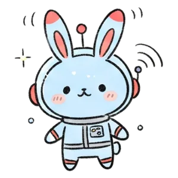

しょうがっこう の さんすう
さんすうスペースラボ

はじめる
せってい
もどる
たんげん を えらぼう
6年
拡大図と縮図
ステージ 7 / 24
これから ふえるよ
これから ふえるよ
これから ふえるよ
これから ふえるよ
これから ふえるよ
まえ
1 / 1
つぎ
もどる
6年 拡大図と縮図
もどる
かく ステージ を えらぼう
もどる
しる 1 拡大図・縮図って なに？
2 / 5
もとの図
ポイント
形を かえずに
大きくした図
を
拡大図、
小さくした図
を
縮図 というよ。
ちいさく
おおきく
たてだけ のばす
まえ
つぎ
もどる
みわける 1 三角形
2 / 5 もん
あ の 拡大図 や 縮図 を ぜんぶ えらぼう
えらんだら
こたえあわせ を おしてね。
ヒント
こたえあわせ
もどる
かく 1 方眼に 2倍の拡大図
1 / 3 もん
三角形ABC の 2倍の拡大図 を かきましょう
点を クリック → つぎの点を
クリック で 線が ひけるよ。
1本 けす
ぜんぶ けす
ヒント
こたえあわせ
もどる
もとめる 1 対応する辺と角
3 / 5 もん
三角形DEF は 三角形ABC の 拡大図 です。辺EF は 何cm？
cm
うさとろ